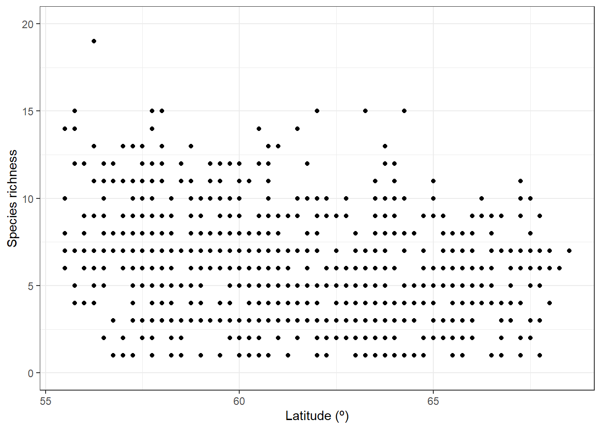

1 Example with fish data from SERS
In this example we are interested in exploring data from a specific data resource – the Swedish Electrofishing Registry - SERS (Department of Aquatic Resources, SLU Aqua). This database has 2.8 M observations starting in the 1950’s.
SBDI is a collection of many biodiversity databases. We start by searching for the data resource we are interested in by using the function pick_filter(). This is an interactive query guiding you through the many resources available to filtering your query (data resources, spatial layers, and curated species lists).
Follow the instructions. Your choices here would have been “in3” :arrow_right: “dr10” (data resource 10 = SERS). Your variable fq_str will now contain a string “data_resource_uid:dr10”.
Note: the function pick_filter() is temporarily disabled until it could be adapted to the new galah framework.
But we are not interested in the complete database, we only want to look at the data from the last 10 years. For this we add another filter string. Both filter strings (for data resource and for time period) will be treated as AND factors.
Using the function sbdi_call() we can now query for the observations fulfilling our filter.
xf <- sbdi_call() |>
filter(dataResourceUid == "dr10",
year >= 2014, year <= 2024) |>
atlas_occurrences()## ---## Source
## 1 SLU Aqua Institute of Freshwater Research Swedish Electrofishing Registry - SERS
## Freq
## 1 269071.1 Plotting data on a map
There are many other ways of producing spatial plots in R, for example you can quickly plot all the observations with plot():
1.2 Temporal summary
A quick summary over the years reveals a drop in number of records over time.
##
## 2014 2015 2016 2017 2018 2019 2020 2021
## 10299 3613 2773 2781 3424 2903 1042 72
1.3 Species summary
In the same way we can summarise the number of observations for each species.
sppTab <- table(xf$scientificName)
sppDF <- as.data.frame(sppTab)
colnames(sppDF)[1] <- "species"
head(sppDF)## species Freq
## 1 Abramis brama 3
## 2 Alburnus alburnus 103
## 3 Anguilla anguilla 285
## 4 Astacidae 23
## 5 Astacus astacus 73
## 6 Barbatula barbatula 45Perhaps, you want to send this table as a .CSV file to a colleague. Save the table:
1.4 Spatial biodiversity analysis
Let’s now ask: How does the species richness vary across Sweden?
For this we want to summarise occurrences species-wise over a defined grid instead of plotting every observation point. First we need to overlay the observations with a grid. Here we are using the standard Swedish grids with grid square size of 50, 25, 10 or 5 km provided as data in the sbdi4r2 package (with Coordinate Reference System = WGS84, EPSG:4326).
library(sf) # the function coordinates() and proj4string() are in sp
# load some shapes over Sweden's political borders
data("swe_wgs84", package = "sbdi4r2", envir = environment())
# a standard 50 km grid
data("Sweden_Grid_50km_Wgs84", package = "sbdi4r2", envir = environment())
grid <- Sweden_Grid_50km_Wgs84
# make the observations spatial
# NOTE: make sure there are no NAs in the columns defining the coordinates
# xf$data[!is.na(xf$data$longitude) | !is.na(xf$data$latitude),]
obs <- st_as_sf(as.data.frame(xf),
coords = c("decimalLongitude","decimalLatitude"),
crs = st_crs(4326))
# overlay the occurrence data with the grid
ObsInGridListID <- st_intersects(grid, obs)
ObsInGridList <- lapply(ObsInGridListID, function(x) st_drop_geometry(obs[x,]))
wNonEmpty <- unname( which( unlist(lapply(ObsInGridList, nrow)) != 0) )The result ObsInGridList is a list object with a subset of the data for each grid cell. Now summarise occurrences within grid cells:
## [1] 26907# apply a summary over the grid cells
nCells <- length(ObsInGridList)
res <- data.frame("nObs" = as.numeric(rep(NA,nCells)),
"nYears" = as.numeric(rep(NA,nCells)),
"nSpp" = as.numeric(rep(NA,nCells)),
row.names = row.names(grid),
stringsAsFactors = FALSE)
cols2use <- c("scientificName", "year")
dataRes <- lapply(ObsInGridList[wNonEmpty],
function(x){
x <- x[,cols2use]
colnames(x) <- c("scientificName", "year")
return(c("nObs" = length(x[,"scientificName"]),
"nYears" = length(unique(x[,"year"])),
"nSpp" = length(unique(x[,"scientificName"]))
)
)
}
)
dataRes <- as.data.frame(dplyr::bind_rows(dataRes, .id = "gridID"))
res[wNonEmpty,] <- dataRes[,-1]
resSf <- st_as_sf(data.frame(res, st_geometry(grid)))And finally plot the grid summary as a map:
palBW <- leaflet::colorNumeric(c("white", "navyblue"),
c(0, max(resSf$nSpp, na.rm = TRUE)),
na.color = "transparent")
oldpar <- par()
par(mar = c(1,1,0,0))
plot(resSf$geometry, col = palBW(resSf$nSpp), border = NA)
plot(swe_wgs84$Border$geometry, border = 1, lwd = 1, add = T)
legend("bottomleft",
legend = round(seq(0, max(resSf$nSpp, na.rm = TRUE), length.out = 5)),
col = palBW(seq(0, max(resSf$nSpp, na.rm = TRUE), length.out = 5)),
title = "Number of \nspecies", pch = 15, bty="n")
par(oldpar)We may now ask whether species richness varies across latitude. So we go further by arranging the observations by latitude:
library(dplyr)
library(tidyr)
xgridded <- xf |>
mutate(longitude = round(decimalLongitude * 4)/4,
latitude = round(decimalLatitude * 4)/4) |>
group_by(longitude,latitude) |>
## subset to vars of interest
select(longitude, latitude, scientificName) |>
## take one row per cell per species (presence)
distinct() |>
## calculate species richness
mutate(richness = n()) |>
## convert to wide format (sites by species)
mutate(present = 1) |>
do(tidyr::pivot_wider(data = .,
names_from = scientificName,
values_from = present,
values_fill = 0)) |>
ungroup()
## where a species was not present, it will have NA: convert these to 0
sppcols <- setdiff(names(xgridded),
c("longitude", "latitude", "richness"))
xgridded <- xgridded |>
mutate_at(sppcols, function(z) ifelse(is.na(z), 0, z))And plot it accordingly:
library(ggplot2)
ggplot(xgridded, aes(latitude, richness)) +
labs(x = "Latitude (º)",
y = "Species richness") +
lims(y = c(0,20)) +
geom_point() +
theme_bw()